IV. Phân loại - Phân cụm
* Classifier (bộ phân loại) xem xét đầu vào - x hoặc một số đặc trưng của dữ liệu và đưa ra dự đoán đầu ra - y là một lớp rời rạc hoặc hạng mục hoặc nhãn cho dữ liệu. Một cách tóm tắt, mục tiêu của phân loại là tìm hiểu ánh xạ từ đầu vào x đến đầu ra y.* Clustering (phân cụm) nhiệm vụ là chia dữ liệu vào cũng 1 nhóm, và các điểm trong nhóm đó giống nhau và khác với điểm dữ liệu trong nhóm khác.Về cơ bản là nó là tập hợp các đối tượng trên cơ sở giống nhau và không giống nhau giữa chúng
* Note: Trong bài viết này mình sẽ không đi sâu vào phương trình toán học, đạo hàm, vi phân các thứ mà chủ yếu tập trung vào ý tưởng, Hands-On
1. Logistic Regression
- Là thuật toán thuộc nhóm học có giám sát, thuật toán này thường dùng để phân loại nhị phân
- Ví dụ, xem một bức ảnh có chứa một con mèo hay không. Thì ở đây ta coi đầu ra y = 1 nếu bước ảnh có một con mèo và y = 0 nếu bức ảnh không có con mèo nào. Đầu vào x ở đây sẽ là các pixel một bức ảnh đầu vào.
-
Một chút toán học: Sử dụng phương pháp thống kê ta có thể coi rằng khả năng một đầu vào x nằm vào một nhóm y_0 là xác suất nhóm y_0 khi biết x : p(y_0/x).
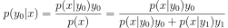
Đặt:
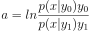
Ta có:
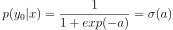
Hàm 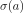 này được gọi là hàm sigmoid, Là hàm số liên tục nhận giá trị thực, bị chặn trong khoảng (0,1), Nếu coi điểm có tung độ là 0.5 làm điểm phân chia thì các điểm càng xa điểm này về phía bên trái có giá trị càng gần 0. Ngược lại, các điểm càng xa điểm này về phía phải có giá trị càng gần 1. Mượt (smooth) nên có đạo hàm mọi nơi, có thể được lợi trong việc tối ưu.
Đạo hàm hàm sigmoid:
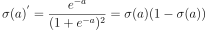
Phương trình tuyến tính: 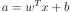
Công thức tính xác suất bây giờ:

Hàm mất mát:
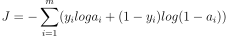
Đạo hàm hàm mất mát:
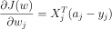 -
Để tìm trọng số w thì chúng ta áp dụng gradient descent:
Công thức:

Để tối ưu hàm mất mát thì chúng ta có thể sử dụng thêm các biến thể Gradient descent mà mình có đề cập ở chương 1(Khuyến khích nên đọc trước).
-
Để tránh việc quá khớp trong thuật toán hồi quy Logistic này thì bạn cứ áp dụng các phương pháp mình liệt kê ở chương 1(Khuyến khích nên đọc trước).
VD: Bạn thêm yếu tố tiêu chuẩn vào hàm mất mát, có dạng như sau:
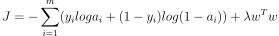
Sau khi đạo hàm ta thu được:
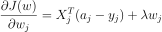

Ảnh minh họa về hồi quy Logistic phân loại 2 lớp
Code
#Import các thư viện liên quan
import numpy as np
import pandas as pd
import matplotlib.pyplot as plt
from sklearn.metrics import *
from sklearn.model_selection import train_test_split
import seaborn as sns
data = pd.read_csv('Churn_Modelling.csv')
n,m = data.shape
X = data.iloc[:,0:m-1].values
Y = data.iloc[:,m-1].values
X = X.reshape(-1,m-1)
Y = Y.reshape(-1,1)
x_train,x_test,y_train,y_test = train_test_split(X,Y,test_size = .2 , random_state=0)
#Hàm sigmoid
def sigmoid(z):
return 1/(1+np.exp(-z))
#Hàm dự đoán
def predict(x,theta):
y_pre = np.dot(x,theta)
return sigmoid(y_pre)
#Hàm mất mát
def cost_funciton(x,y,theta):
n = x.shape[1]
eps = 1e-7
predicta = predict(x,theta)
cost_class1 =- y * np.log(predicta+eps)
cost_class0 =-(1-y)*np.log(1-predicta+eps)
cost = cost_class0 + cost_class1
return cost.sum()/n
#Hàm tính toán độ chính xác
def accuarcy(label,y_test):
return np.mean(label==y_test)
#Hàm cập nhật trọng số
def gradient_descent(theta,X,y,lr,iters):
cost_history = []
m=X.shape[1]
for i in range(iters):
y1 = predict(X,theta)
theta = theta - lr*np.dot(X.T, (y1-y))/m
cost = cost_funciton(X,y,theta)
cost_history.append(cost)
return theta,cost_history
2. Support Vector Machine
Minh họa thuật toán SVM
- Là một thuật toán thuộc nhóm học có giám sát, SVM có thể giải quyết cả 2 bài toán về hồi quy và phân loại, phần lớn nó được sử dụng nhiều trong vấn đề phân loại nhiều hơn. Nó còn giải quyết các bài toán về dữ liệu phân tách tuyến tính hoặc dữ liệu phi tuyến.
- Ý tưởng cơ bản của thuật toán là tìm một siêu mặt phẳng để phân tách 2 lớp hay nhiều lớp.
- Cần tìm khoảng cách ngắn nhất từ điểm gần nhất mỗi lớp (Support vector) tới mặt phân chia là như nhau, khoảng cách này đường gọi biên/lề (margin).
- Margin càng rộng thì càng phân tách các lớp rõ ràng hơn trong tập dữ liệu hay tập dữ liệu mới. Bài toán tối ưu SVM chính là tìm đường phân chia sao cho margin lớn nhất nhưng cũng hạn chế các vi phạm biên tức là các mẫu nằm trên hoặ trong mặt phằng.
- Bài toán tối ưu trong SVM là một bài toán lồi với hàm mục tiêu là stricly convex, nghiệm của bài toán này là duy nhất.
- Khoảng cách từ điểm gần nhớ của mỗi lớp tới mặt phân chia được tính như sau:
Với cặp (X,y) bất kỳ tới mặt phẳng phân chia 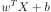 là: 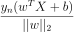 - Chúng ta có thể tìm các tham số w,b qua hàm đối ngẫu, điều kiện KTT tùy nhiên phân này hơi sâu về toán học nên mình giải thích ở đây. Hoặc chúng ta cũng có thể tìm nghiệm qua Gradient descent
-
Trước khi đi tìm tham số chúng ta tìm hiểu qua về Biên cứng và Biên mềm:
*SVM thuần thường được gọi là biên cứng, nếu chúng ta nghiêm ngắt trong việc phân tách các điểm dữ liệu phải nằm ngoài mặt phẳng phân chia, không vi phạm biên có thể gọi đó là biên cứng.
*Biên cứng chỉ hoạt động tốt trên dữ liệu linearly separable, và nó cực kỳ nhạy cảm với outlier
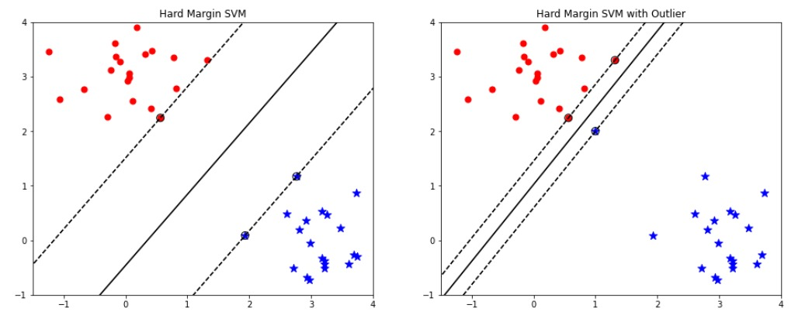
Hình ảnh minh họa Biên cứng
*Biên mềm nó tránh các vần đế như vậy, ta sử dụng một mô hình linh hoạt, mục tiêu bài toán cũng vậy vẫn tìm độ rộng con đường càng lớn càng tốt, nó chấp nhận bị vi phạm biên để có 1 kết quả phân loại tốt tùy nhiên nó vẫn hạn chế các điểm vi phạm đó. Phù hợp với dữ liệu phân tách tuyến tính và dữ liệu gần với phân tách tuyến tính
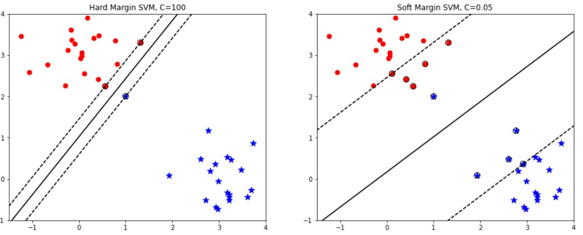
Hình ảnh minh họa Biên cứng
*Trong biên mềm có thêm tham số đó C, C là một hệ số rất quan trọng thể hiện tỷ lệ đánh đối giữa sự mở rộng lề và và sự hi sinh. C cao thì biên nó sẽ nhỏ lại tức sẽ ko có điểm nào hy sinh bài toán trở về phân loại biên cứng còn C nhỏ biên nó sẽ rộng ra. Việc hy sinh cao hay thấp không ảnh hưởng tới hàm mục tiêu.
- Chúng ta tìm hiểu qua một chút về biên mềm, bây giờ sử dụng biên thể này để tìm các tham số, để tìm tham số chúng ta cũng có 2 cách tiếp cận. (1) Giải bài toán theo bài toán đối ngẫu có ràng buộc, (2) Giải bài toán theo phương Gradient Descent
-
(2) Giải bài toán theo phương pháp GD.
*Để tính toán GD dựa theo hàm Loss, chúng ta sẽ làm quen với 1 hàm loss mới được sử dụng nhiều trong phân loại đó là: Hinge loss
*Hàm này có công thức như sau: 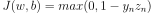 ,trong đó 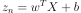 và y chính là đầu ra mong muốn
*Có hàm mất mát rồi thì chúng ta tìm kiếm các tham số w,b theo GD thì cứ như công thức thôi. Tuy nhiên có điểm cần chú ý, giải bài toán svm theo gradient descent thì nó không có ràng buộc vì vậy nghiệm tìm được nó không ổn định có thể lớn tùy ý. Nên chúng ta cần thêm yếu tố ràng buộc vào.
*Đạo hàm hinge loss:
- Xét từng điểm dữ liệu, ta có hai trường hợp:
*TH1: 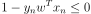, ta có đạo hàm theo w sẽ bằng 0.
*TH1: 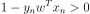, ta có đạo hàm theo w sẽ bằng 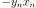*Tổng quát khi thêm yếu tố ràng buộc đó là thêm yếu tố tiêu chuẩn.
*Công thức tổng quát:
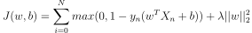Cuối cùng quy tắc cập nhật của w sẽ:
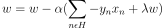
def SVM(x,y):
learning_rate = 0.001
lambda_param = .01
n_iters = 1000
y = np.where(y<=0,-1,1)
n_samples , n_feature = x.shape
w = np.zeros((n_feature))
b = 0
iters = 0
while iters<=n_iters:
iters = iters+1
for i_dx,x_i in enumerate(x):
if y[i_dx] * (np.dot(x_i,w)-b)>=1:
w -= learning_rate*(lambda_param*w)
else:
w -= learning_rate*(lambda_param*w-np.dot(x_i,y[i_dx]))
b -= learning_rate*y[i_dx]
return w,b
- Với những bộ dữ liệu phi tuyến chúng ta không thể giải quyết bằng svm thuận được vì chúng ta có kĩ thuật mới.
- Dữ liệu không phân tách tuyến tính thì chúng ta có thể làm nó tuyến tính hoặc gần tuyến tính bằng cách biến đổi dữ liệu từ không gian này sang không gian khác. Hoặc có thể nói tìm một hàm số biến đổi x từ không gian ban đầu thành dữ liệu ở không gian mới bằng một hàm f(x).
- Tuy nhiên trong thực tế, việc tạo dữ liệu với không gian chiều cao hơn ban đầu hoặc có thể hữu hạn, nếu chúng ta tính toán trực tiếp thì gặp rất nhiều khó khăn và tốn bộ nhớ. Có 1 cách tiếp cận mà không cần tính toán như vậy, mà nó chỉ cần tính toán dựa trên 2 bất kỳ trong không gian mới.
- Chúng ta có thể nói rằng Kernel svm này có thể có chức tương tự như hàm activation trong mạng nơ-ron.
- Chúng ta không cần tính trực tiếp hàm f(x) mà chỉnh cần xác định hàm này: 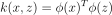 kỹ thuật này gọi kernel trick, thay vì tính trực tiếp tọa độ trên không gian mới, chúng ta chỉnh cần tính tích vô hướng của 2 điểm trong không gian mới.
- Một số hàm kernel thông dụng:
- Linear
- Poly
- RBF hay gaussian kernel
- Sigmoid
Bảng các hàm kernel thông dụng và các tham số.
3. Decision Tree
Hình ảnh minh họa cây quyết định trong bài toán phân loại
- Trong cuộc sống có rất nhiều tình huống chúng ta quan sát, suy nghĩ và ra quyết định bằng cách đặt câu hỏi. Xuất phát từ đó, trong Machine Learning có một mô hình được thiết kế dưới dạng các câu hỏi, mà ở đó các câu hỏi được sắp xếp dưới dạng cây. Đó chính là mô hình cây quyết định
- Decision tree là 1 thuật toán thuộc nhóm supervised learing, thuật toán này có thể sử dụng trong 2 bài toán là classification và regression
- Việc xây dựng thuật toán dự trên tập dữ liệu huấn luyện cho trước là việc đi xác định các câu hỏi và thứ tự của chúng.
- Điểm đặc biệt đó là thuật toán có thể làm việc với biến categorical thường rời rạc không thứ tự. Decision tree cũng làm việc với dữ liệu có vector đặc trưng bao gồm cả 2 thuộc tính categorical và numberic. Dữ liệu cũng không cần chuẩn hóa dữ liệu khi đưa vào huấn luyện
- Có 2 thuật toán phổ biển để triển khai thuật toán: CART (Classification And Regression Tree), ID3(Iterative Dichotomiser 3
- Để trả lời cho câu hỏi một cây quyết định được tạo ra như thế nào? Chúng ta cần biết được thứ tự câu hỏi là gì và cách đặt câu hỏi như thế nào?
- Đối với những bộ dữ liệu có số lượng biến đầu vào lớn, việc lựa chọn biến nào sẽ được đặt ở node gốc là điều không dễ dàng vì vậy ta cần có thước đo các đặc trưng và lựa chọn đặc trưng nào phù hợp để chia
- Các thước đo trong phân loại đó entropy,gini đo lường mức độ tinh khiến (purity) và vẩn đục (impurity)
- Mục tiêu của chúng ta khi đối diện với bài toán phân loại đó là kết quả trả về tại node lá chỉ thuộc về một lớp. Chúng ta sử dụng một thuật ngữ ngắn gọn để gọi tên trường hợp này là tinh khiết (purity). Trái ngược lại với tinh khiết sẽ là khái niệm vấn đục (impurity), tức phân phối của các nhãn tại node lá còn khá mập mờ, không có xu hướng thiên về một nhãn nào cụ thể.
-
Hàm Entropy có dạng là:
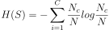
Giả sử ta chọn thuộc tính x, dựa trên x, các điểm dữ liệu trong S chia thành K node con 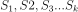 với số điểm trong mỗi child node 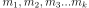
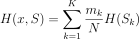
Bản chất thì entropy là một thước đo về độ tinh khiết của phân phối xác suất. Dựa trên entropy chúng ta có thể đánh giá tính hiệu quả của câu hỏi ở mỗi node và quyết định xem đâu là câu hỏi hiệu quả hơn (có độ tinh khiết lớn hơn, entropy nhỏ hơn).
Đó là cách lựa chọn đặc trưng để chia, dựa vào thước đo entropy hoặc gini. - Cây quyết định dễ bị overfit, bởi vì overfit xảy ra khi bạn thiết kế cây quá hoản hảo khớp với dữ liệu traning, thiết kế cây hoản hảo là bạn tăng chiều sâu cây lên làm cho mô hình học quá các chi tiết. Do cây quyết định không đặt giả định về dữ liệu huấn luyện (ngược lại với các mô hình tuyến tính). Nếu ko có ràng buộc thì thuật toán sẽ thích ứng với dữ liệu quá mức. Mô hình như này thường đường gọi là mô hình phi tham số, không phải là không có tham số mà nó số lượng tham số ko tham gia quyết định trước khi huấn luyện mà để mô hình khớp dữ liệu 1 các tự do. Để tránh vấn overfit ta cần đặt ràng buộc thì việc này như chúng ta đã biết đó là tiêu chuẩn
- Câu hỏi đặt ra tại sao khi tăng chiều sâu (depth) thì training error lại giảm: Chúng ta sẽ quay về vấn đề lựa chọn đặc trưng để chia.
- Dừng đệ quy cũng rất quan trọng đến vấn đề hiệu suất mô hình chúng ta sẽ nghiên cứu về vấn đề cắt tỉa cây (Pruning) để tăng hiệu suất
def entropy(target_col):
elements,counts = np.unique(target_col,return_counts = True)
entropy = np.sum([(-counts[i]/np.sum(counts))*np.log2(counts[i]/np.sum(counts)) for i in range(len(elements))])
return entropy
def ID3(data,originaldata,features,target_attribute_name="Exited",parent_node_class = None):
if len(np.unique(data[target_attribute_name])) <= 1:
return np.unique(data[target_attribute_name])[0]
elif len(data)==0:
return np.unique(originaldata[target_attribute_name])[
np.argmax(np.unique(originaldata[target_attribute_name],return_counts=True)[1])]
elif len(features) ==0:
return parent_node_class
else:
parent_node_class = np.unique(data[target_attribute_name])[
np.argmax(np.unique(data[target_attribute_name],return_counts=True)[1])]
item_values = [InfoGain(data,feature,target_attribute_name) for feature in features]
best_feature_index = np.argmax(item_values)
best_feature = features[best_feature_index]
tree = {best_feature:{}}
features = [i for i in features if i != best_feature]
for value in np.unique(data[best_feature]):
sub_data = data.where(data[best_feature] == value).dropna()
subtree = ID3(sub_data,dataset,features,target_attribute_name,parent_node_class)
tree[best_feature][value] = subtree
return(tree)
4. RandomForest
Mô hình RandomForest
- Trước khi nói đến Randomforest chúng ta cần nói đến Ensemble learing: là kỹ thuật học với nhiều thuật toán kết hợp với nhau hoặc có thể nói là ta có thể đào tào với nhiều thuật toán ML và kết hợp các dự đoán của chúng theo nào đó. Cách tiếp cận như này có xu hướng đưa ra kết quả dự đoán tốt hơn, Mô hình emsemble là sự kết hợp nhiều mô hình cơ bản lại.
- Trong emsemble learning có 3 loại phổ biến: Bootsting, Bagging, Stacking.
- Bootsting: Tiếp cận theo cách tuần tự, Ý tưởng chính của thuật toán bootsting là từng bước xây dựng một tập hợp bằng cách đào tạo từng cá thể mô hình mới để nhấn mạnh các thể hiện đào tạo mà các mô hình trước đó đã phân loại sai. Nói chung, boost là một kỹ thuật mạnh và được sử dụng rộng rãi. Thật không may, nó có xu hướng trang bị quá nhiều dữ liệu đào tạo, vì vậy bạn cần phải cẩn thận khi sử dụng nó. Tuy nhiên, có rất nhiều thuật toán thúc đẩy, ví dụ: AdaBoost, Stochastic Gradient Boosting, XGBoost, CatBoost và các thuật toán khác
- Stacking: là một kỹ thuật thú vị hơn một chút. Nó liên quan đến việc đào tạo một mô hình, để kết hợp các dự đoán của nhiều thuật toán Máy học khác. Stacking thu được kết quả hiệu suất tốt hơn bất kỳ thuật toán riêng lẻ nào. Nó có thể được sử dụng để giải quyết thành công cả vấn đề ML có giám sát và không giám sát. Ví dụ: bạn có thể sử dụng tính năng xếp chồng cho tác vụ ước tính mật độ và hồi quy.
- Bagging: Bagging là một kỹ thuật khá đơn giản nhưng thực sự mạnh mẽ. Việc hiểu khái niệm chung về Đóng gói thực sự rất quan trọng đối với chúng tôi vì nó là cơ sở của thuật toán Rừng ngẫu nhiên (RF). Chúng ta hãy kiểm tra sâu thuật toán đóng bao chung.
- Mô hình randomforest dựa trên mô hình emsemble để xây dựng và đúng là sử kỹ thuật Bagging vì các tính toán chạy song song không có sự tương tác giữa các cây
- Ý tưởng chung của thuật toán: Là sự kết hợp nhiều cây quyết định (Decision tree), tuy nhiên với mỗi cây quyết định đều có tính ngẫu nhiên sau đó kết quả dự đoán là sự kết hợp của nhiều cây
- Xây dựng thuật toán Randomforest
- Chúng ta chuẩn bị dữ liệu: Ta sẽ lấy ngẫu nhiên n dữ liệu từ bộ dữ liệu, kỹ thuật này được gọi là boottrapping. Tức là ta lấy sample từ bộ dữ liệu không vứt nó đi mà vẫn để lại ở dữ liệu ban đầu đến khi chúng ta chia đủ n dữ liệu, n tập dữ liệu được lấy này có thể trùng nhau
- Sau khi đủ n dữ liệu thì ta tiếp lấy ngẫu nhiên k thuộc tính (k < n). Dữ liệu mới đủ n dữ liệu đủ k thuộc tính
- Dùng thuật toán Decision tree tiếp tục xây dựng với các dữ liệu đang chia ở trên.
- Qúa trình xây dựng thuật toán decision tree dựa trên ngẫu nhiên nên kết quả các cây trong thuật toán Randomforset đều khác nhau.
- Kết quả cuối cùng chính là sự kết hợp của tất cả cây quyết định được đào tạo trước đó.
- Khi xây dựng thuật toán Randomforest chúng ta cần điều chỉnh các tham số sau: Số lượng cây quyết định, Số lượng thuộc tính, Số lượng thuộc tính, Số phân tử tối thiếu tách cây
Minh họa về Ensemble learning
- Ưu điểm:
- Rừng ngẫu nhiên được coi là một phương pháp có độ chính xác cao và mạnh mẽ vì số lượng cây quyết định tham gia vào quá trình.
- Nó không bị vấn đề trang bị quá nhiều. Lý do chính là nó lấy giá trị trung bình của tất cả các dự đoán, điều này loại bỏ các thành kiến.
- Thuật toán có thể được sử dụng trong cả các bài toán phân loại và hồi quy
- Rừng ngẫu nhiên cũng có thể xử lý các giá trị bị thiếu. Có hai cách để xử lý những điều này: sử dụng các giá trị trung vị để thay thế các biến liên tục và tính toán giá trị trung bình có trọng số lân cận của các giá trị bị thiếu.
- Bạn có thể nhận được tầm quan trọng của tính năng tương đối, điều này giúp chọn các tính năng đóng góp nhiều nhất cho bộ phân loại.
- Nhược điểm
- Rừng ngẫu nhiên chậm tạo ra các dự đoán vì nó có nhiều cây quyết định. Bất cứ khi nào nó đưa ra dự đoán, tất cả các cây trong rừng phải đưa ra dự đoán cho cùng một đầu vào nhất định và sau đó thực hiện bỏ phiếu cho nó. Toàn bộ quá trình này tốn nhiều thời gian.
- Mô hình khó diễn giải so với cây quyết định, nơi bạn có thể dễ dàng đưa ra quyết định bằng cách đi theo con đường trong cây.
from sklearn import datasets
from sklearn import metrics
from sklearn.ensemble import RandomForestClassifier
#Load dataset
iris = datasets.load_iris()
clf=RandomForestClassifier(n_estimators=100)
clf.fit(X_train,y_train)
y_pred=clf.predict(X_test)
print("Accuracy:",metrics.accuracy_score(y_test, y_pred))
5. Kmeans
Phân cụm là tác vụ xác định các mẫu tương tự nhau và phân loại chúng vào các cụm, hoặc các nhóm tương đồng nhau. Cũng giống như tác vụ phân loại, mỗi mẫu được gán cho một nhóm. Tuy nhiên, khác với phân loại, phân cụm là tác vụ không giám sát.- Thuật toán K-Means là một thuật toán đơn giản có khả năng phân nhóm tập dữ liệu dạng này một cách nhanh chóng và hiệu quả, thường chỉ trong một vài vòng lặp
- Cách hoạt động của thuật toán:
- Chọn K điểm bất kỳ làm các center ban đầu
- Phân mỗi điểm dữ liệu vào cluster có center gần nó nhất.
- Nếu việc gán dữ liệu vào từng cluster ở bước 2 không thay đổi so với vòng lặp trước nó thì ta dừng thuật toán.
- Cập nhật center cho từng cluster bằng cách lấy trung bình cộng của tất các các điểm dữ liệu đã được gán vào cluster đó sau bước 2.
- Quay lại bước 2.
Đầu vào: Dữ liệu Xvà số lượng cluster cần tìm K.
Đầu ra: Các center Mvà label vector cho từng điểm dữ liệu Y.
Chúng ta có thể đảm bảo rằng thuật toán sẽ dừng lại sau một số hữu hạn vòng lặp. Thật vậy, vì hàm mất mát là một số dương và sau mỗi bước 2 hoặc 3, giá trị của hàm mất mát bị giảm đi. Theo kiến thức về dãy số trong chương trình cấp 3: nếu một dãy số giảm và bị chặn dưới thì nó hội tụ! Hơn nữa, số lượng cách phân nhóm cho toàn bộ dữ liệu là hữu hạn nên đến một lúc nào đó, hàm mất mát sẽ không thể thay đổi, và chúng ta có thể dừng thuật toán tại đây.
#giảm chiều dữ liệu
from sklearn.decomposition import PCA
pca = PCA(n_components=3).fit(df_3)
PCA_ds = pd.DataFrame(pca.transform(df_3), columns=(["col1","col2", "col3"]))
#Huấn luyện
from yellowbrick.cluster import KElbowVisualizer
from sklearn.cluster import KMeans
elbrow = KElbowVisualizer(KMeans(),k = 10).fit(PCA_ds)
elbrow.show()
from mpl_toolkits.mplot3d import Axes3D
from sklearn.cluster import AgglomerativeClustering
from matplotlib.colors import ListedColormap
AC = AgglomerativeClustering(n_clusters=4)
yhat_AC = AC.fit_predict(PCA_ds)
PCA_ds["Clusters"] = yhat_AC
df_3["Clusters"]= yhat_AC
from matplotlib import colors
cmap = colors.ListedColormap(["#682F2F", "#9E726F", "#D6B2B1", "#B9C0C9", "#9F8A78", "#F3AB60"])
fig = plt.figure(figsize=(10,8))
ax = plt.subplot(111, projection='3d', label="bla")
ax.scatter(x, y, z, s=40, c=PCA_ds["Clusters"], marker='o',cmap = cmap)
ax.set_title("The Plot Of The Clusters")
plt.show()